1Start with the case body 3D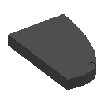1 polished ebony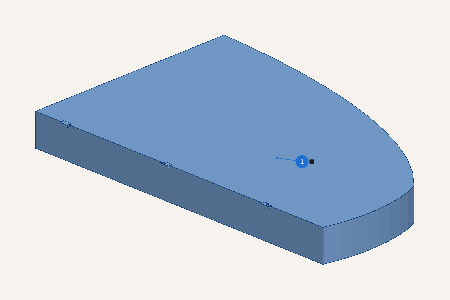1 case body polished ebony — the base
2Glue the nameplate and the leg rear onto the case body 3D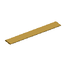2 brass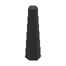3 polished ebony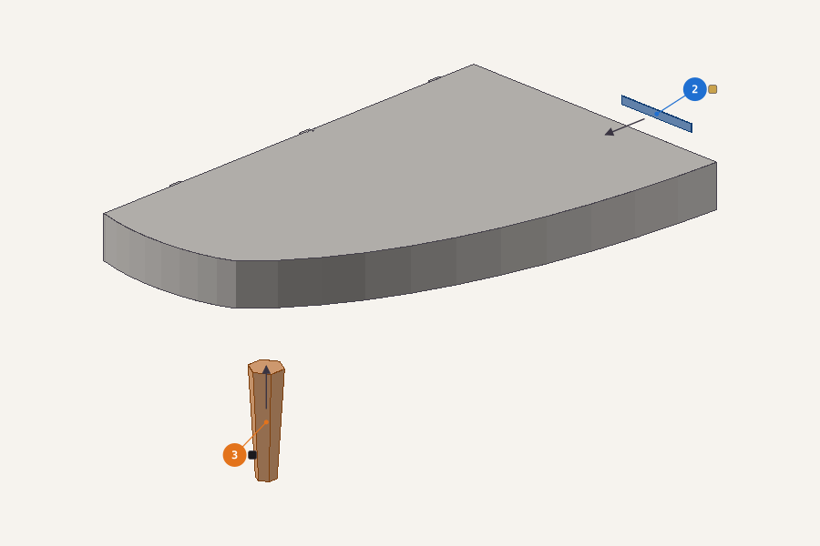2 nameplate brass onto 1 case body3 leg rear polished ebony onto 1 case body
3At the bench: build the keybed, with the lyre post, 2 × cheek and the key slipBuild this on its own first 3D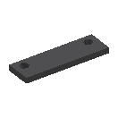4 polished ebony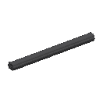5 polished ebony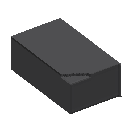6, 7 ×2 polished ebony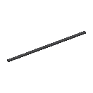8 polished ebony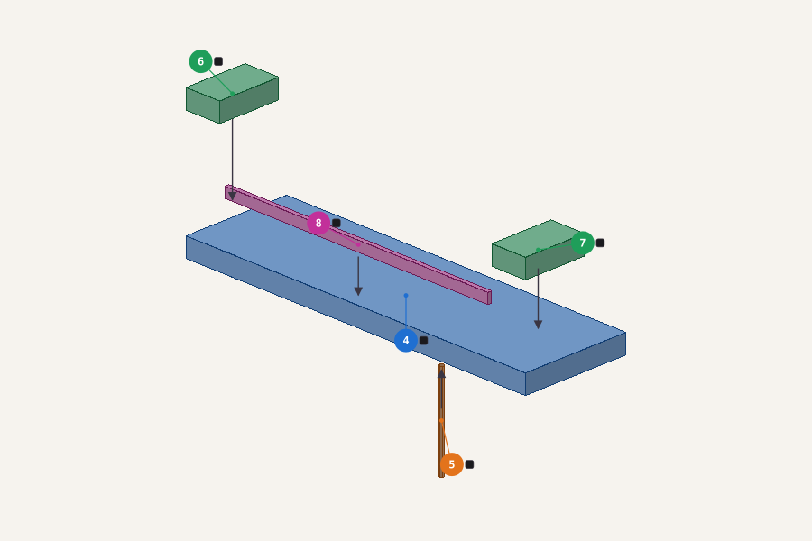4 keybed polished ebony — start of this assembly5 lyre post polished ebony onto 4 keybed67 cheek polished ebony onto 4 keybed8 key slip polished ebony onto 4 keybed
4Glue 2 × leg front, the lyre post, the lyre box and the pedals onto the keybed 3D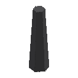9, 10 ×2 polished ebony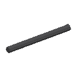11 polished ebony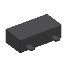12 polished ebony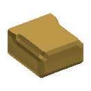13 brass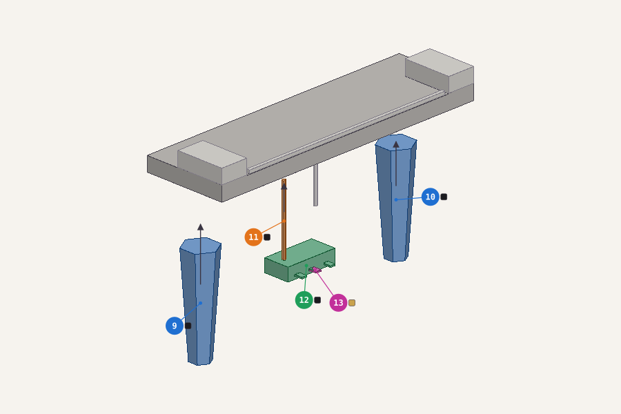910 leg front polished ebony onto 4 keybed11 lyre post polished ebony onto 4 keybed12 lyre box polished ebony onto 11 lyre post13 pedals brass onto 12 lyre box
5At the bench: build the white keys, with 36 × black keysBuild this on its own first 3D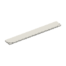14 key white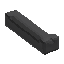15, 16, 17… ×36 key black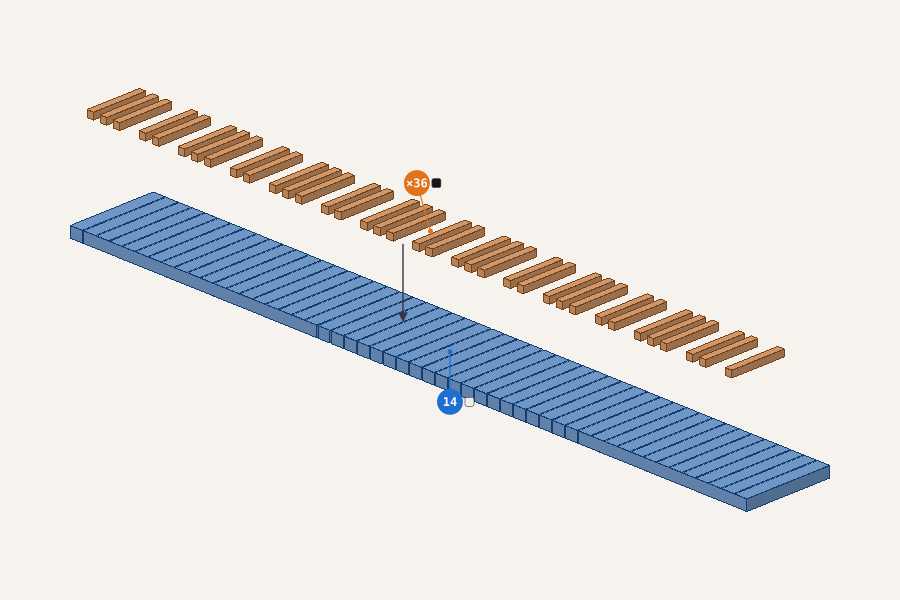14 white keys key white — start of this assembly1516… 50 ×36 black keys key black onto 14 white keys
6Fit the white keys assembly onto the keybedFit it 3D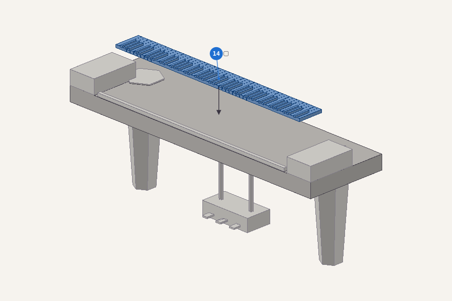14 the white keys assembly onto 4 keybed
7Fit the keybed assembly onto the case bodyFit it 3D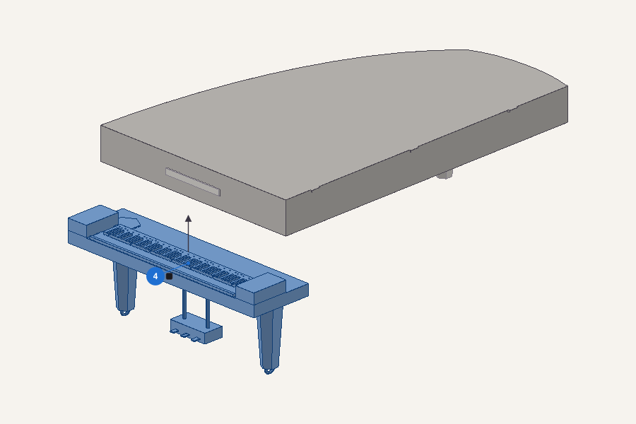4 the keybed assembly onto 1 case body
8Details, last: the caster rear and 2 × caster wheelFragile: fit these last 3D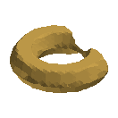51 brass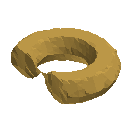52, 53 ×2 brass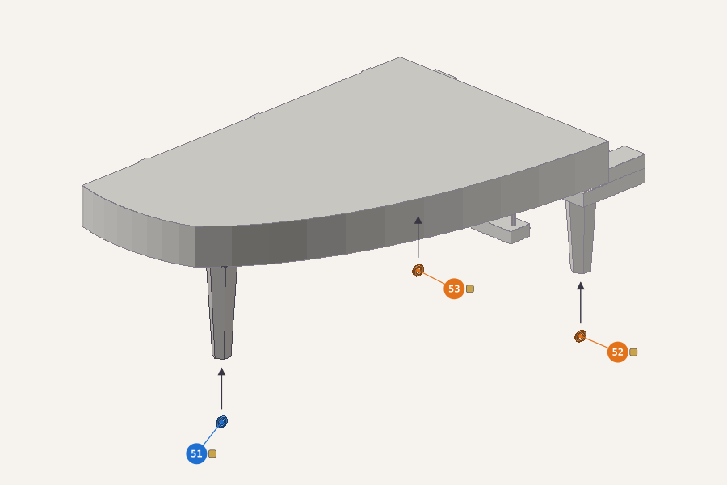51 caster rear brass onto 3 leg rear5253 caster wheel brass onto 9, 10 leg front
9Hang the lid on the case bodyIt moves: glue it shut, or leave it unglued to show it open 3D54 polished ebony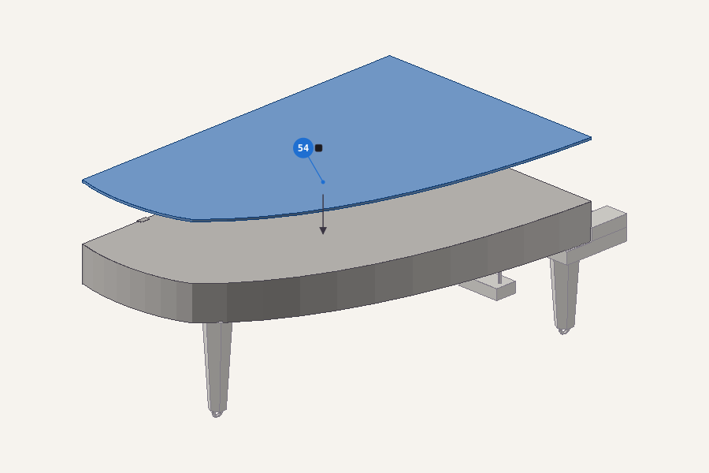54 lid polished ebony onto 1 case body